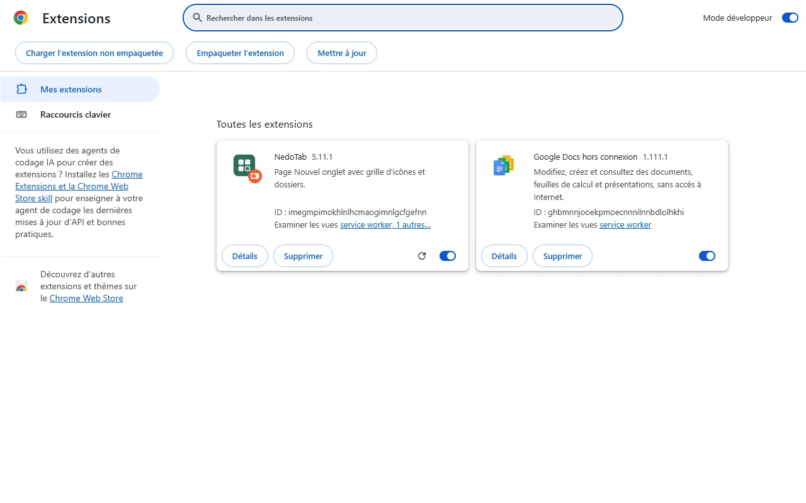

Installer NedoTab
Cinq minutes, sur Windows comme sur macOS. Vous avez seulement besoin de Google Chrome.
-
Téléchargez le fichier
Télécharger NedoTab 7.3.2 (fichier .zip de 532 Ko).
Empreinte SHA-256 :
66fd7206952e256ae6ff3314dbfe527327da52031763e06699e9748a051bae90 -
Décompressez-le dans un dossier que vous garderez
Sur Windows : clic droit sur le fichier, puis Extraire tout. Sur macOS : double-clic sur le fichier.
Placez le dossier obtenu à un endroit où il restera, par exemple
Documents/NedoTab. Chrome lit l'extension dans ce dossier à chaque démarrage : s'il est supprimé ou déplacé, l'extension cesse de fonctionner. -
Ouvrez la page des extensions de Chrome
Copiez cette adresse, collez-la dans la barre d'adresse de Chrome et appuyez sur Entrée. (Une page web ne peut pas ouvrir cette adresse directement.)
chrome://extensions -
Activez le mode développeur
L'interrupteur se trouve en haut à droite de la page.

-
Chargez l'extension
Cliquez sur Charger l'extension non empaquetée, puis choisissez le dossier décompressé à l'étape 2 : celui qui contient le fichier
manifest.json. NedoTab apparaît dans la liste. -
Ouvrez un nouvel onglet
Appuyez sur Ctrl + T (⌘ + T sur Mac). Chrome demande s'il faut revenir à la page de Google : choisissez Conserver.
-
Ajoutez vos sites
Cliquez sur + pour ajouter un site. Pour chercher, cliquez dans la page puis tapez / : à l'ouverture d'un onglet, Chrome place d'abord le curseur dans sa barre d'adresse.
Le bouton de la barre d'outils
Depuis la version 4.29, l'icône NedoTab de la barre d'outils de Chrome ouvre une petite fenêtre : Ajouter ce site ou Ouvrir le chat. Depuis la version 5.11, « Ajouter ce site » ouvre une grande fenêtre centrée (environ 75 % de l'écran) avec l'aperçu de la carte, l'emplacement et l'icône. Lors de la mise à jour, Chrome peut demander d'accepter deux nouvelles permissions : activeTab (lire l'adresse et le titre de l'onglet sur lequel vous cliquez, et seulement celui-là) et sidePanel (afficher le chat dans le panneau latéral de Chrome). Rien n'est lu sans votre clic.
Le VPN dans l'extension (version 5.3)
Le VPN est réservé aux personnes invitées par le propriétaire. Pour qu'un interrupteur suffise à le démarrer, la mise à jour 5.3 demande à Chrome d'accepter trois permissions : proxy (changer le serveur par lequel Chrome se connecte, uniquement quand vous activez le VPN), webRequest et webRequestAuthProvider (donner automatiquement le mot de passe au serveur du VPN, et à lui seul). Chrome peut les résumer par « Lire et modifier toutes vos données » et « Contrôler les paramètres de proxy ». À la première activation, NedoTab demande aussi l'accès aux sites. Le VPN change l'adresse IP vue par les sites ; il ne rend pas anonyme.
Un souci ?
« Le fichier manifeste est introuvable »
Le dossier choisi n'est pas le bon. Choisissez le dossier qui contient directement
manifest.json, pas un dossier au-dessus.
Mon nouvel onglet n'a pas changé
Vous avez probablement répondu « Revenir » à la question de Chrome. Ouvrez
chrome://extensions, désactivez puis réactivez NedoTab, ouvrez un nouvel onglet
et choisissez Conserver.
Je ne vois pas « Mode développeur »
Votre Chrome est sans doute géré par une entreprise ou une école, qui a désactivé cette option. Seul l'administrateur peut l'autoriser.
Pour installer une nouvelle version plus tard, suivez le guide de mise à jour.